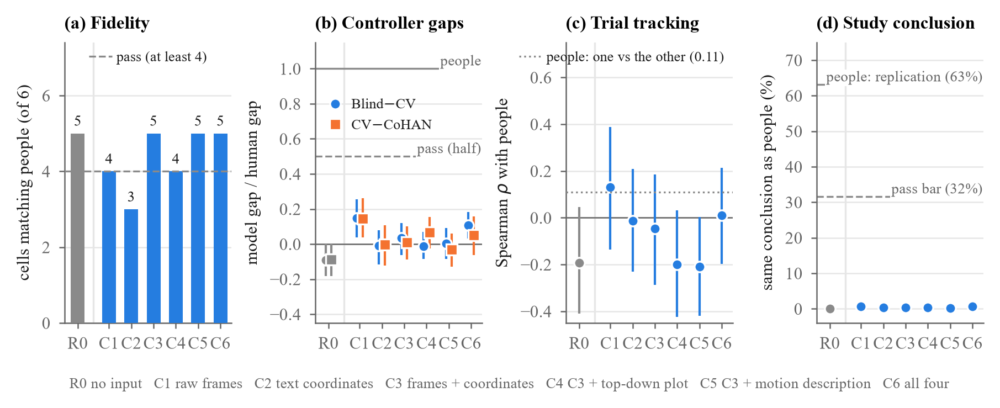
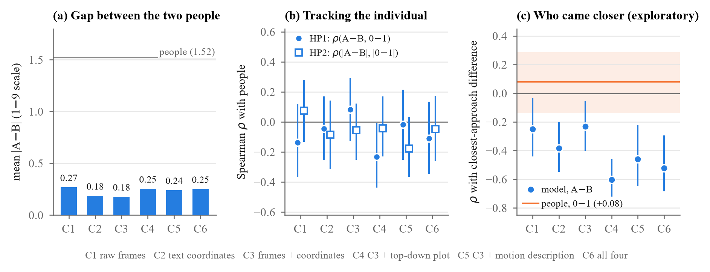
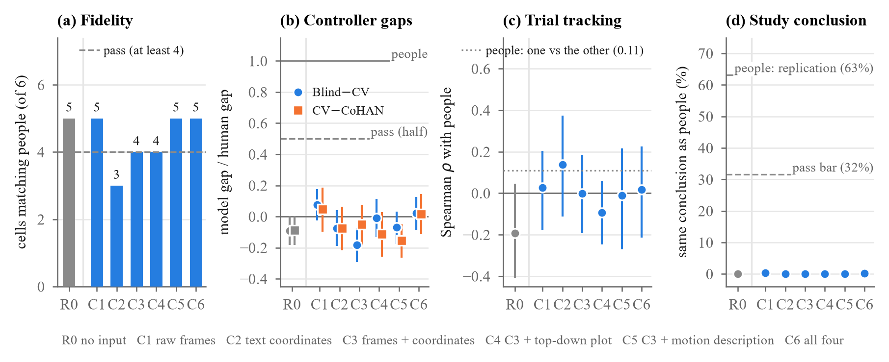

Each Bi3 survey row is one person rating one trial, and the two people in a session often disagree. So we asked Claude Opus 5.5 about each trial twice, once as person A and once as person B, at the same six inputs as before. That makes 972 answers, each scored against that person's own ratings.
The model gives A and B different answers, and for a reason you can see: the person who came closer to the robot gets more discomfort. People don't work that way. Which of the two reported more discomfort has nothing to do with who came closer, so the model's A−B differences don't track the real ones at any input.
Its A−B differences are also small, about a seventh of how much the two participants really differ. Averaging A and B into one pair answer still fails the decision test. To simulate a specific participant, the model needs information about the person, not more detail about the motion.
The earlier run (v4) asked how a typical participant would rate each trial, and compared that one answer with both people in the session. Those two people agree only weakly: across trials, their discomfort ratings correlate at ρ = 0.11. A single generic answer can't match two people who disagree, so this page treats the per-person run as the experiment. The generic run only appears where the pre-registered HP3 compares against it.
The no-input baseline (R0) still applies. With no trial material the model cannot tell A from B, so its per-person answer is the same as its generic one.
Everything matches the earlier run except the question. The model sees the same material: video frames, text coordinates, a top-down plot or a motion description, in the same six combinations. Each answer is about one named person.
| Code | What the model sees for each trial |
|---|---|
| R0 | No trial material at all, only the question (the no-input baseline) |
| C1 | Raw frames: a sparse set of overhead video frames |
| C2 | Text coordinates: robot and people positions over time, written out as numbers |
| C3 | C1 + C2: frames and coordinates |
| C4 | C3 + a top-down plot of the robot's and people's paths |
| C5 | C3 + a written description of the motion |
| C6 | All four: frames, coordinates, plot and description |
“Imagine that about 40 different people had each experienced this trial as person A: in person A's place, doing what person A did and meeting the robot when and where person A met it.” The model then gives how many of the 40 would choose each score from 1 to 9, for discomfort and for competence.
Coordinates, the description and the plot already label the two people A and B. Video frames have no labels, so the prompt adds one sentence per trial, for example: “In the video frames, person A is the person who starts further to the left in the first frame (t = 0 s), and person B is the person who starts further to the right.” The sentence is computed from each trial's starting positions and checked against the video on three trials.
For each trial, take the gap between the two answers. People's gaps are large: the middle half of trials runs from 0.8 to 1.8 points on the 1–9 discomfort scale. The model's gaps sit mostly under 0.4, at every input. It treats A and B as two versions of the same typical person.
Each dot is one trial. Across is the people's difference (person 0 minus person 1); up is the model's (A minus B). If the model tracked individuals, the dots would rise from lower left to upper right, and most would sit in the two shaded corners where the model and the people pick the same person. At every input they form a flat band.
The one interval that excludes 0 is HP1 at C4, and it lies below 0, so on that input the swapped assignment would pass. No other input agrees, so this reads as noise across 12 tests rather than evidence that the identity match is reversed.
For each person and each pair of controllers, did the model's answers for that person order the two controllers the way that person did? If the model were simulating individuals, scoring it against the right person should beat scoring it against the wrong one. It doesn't: direct and swapped land close together, near the 50% chance line. One participant predicting the other reaches 60%.
HP3 compared per-person agreement with the generic run's agreement at the same input. It nominally passes at C1 and C3, but those are the inputs where the generic run fell below chance (42% and 35%), and swapped scoring gains as much as direct. At C1 part of the gain also comes from fewer ties (11% → 6%).
From the motion capture, we measured each person's own encounter: their closest approach to the robot, and how long they spent within 1 m of it. Then we asked which A−B differences follow these.
The model's do, at every input and most strongly once the plot is added (C4–C6). People's don't. The person who came closer was not more likely to report more discomfort. The model is doing what it was asked, reasoning from each person's encounter, but that isn't what drives the participants' disagreement.
Both answers reason from who met the robot where and when. This is the model reading the trial correctly. Whether person A in this session actually felt more uncomfortable is a separate question, and across the 81 trials that is what the model cannot predict.
Averaging each trial's A and B answers gives one answer per trial, which we score with the same pair-level tests as before. The controller gaps stay a small fraction of people's. Simulated studies built from these answers almost never reach the people's conclusion, whether each simulated participant is drawn from the pair average or from their own person's answer.
Raw frames (C1) show the only hint of structure. The averaged answers rate CV least uncomfortable, ordering the controllers like people on 63% of pairs. The gaps are still a seventh of people's (0.10 vs 0.69), and the generic run at the same input showed none of this (42%). Treat it as one input out of six, not a finding.
LAAS has 20 sessions (60 trials); UM has 7 (21 trials), so its intervals are wide. At UM the model's gap is, if anything, larger where the pair agreed more (HP2 below 0 at C2, C3 and C6). With seven sessions, that is as likely noise as anything else.
ρ with its 95% interval. Preference agreement is shown as direct / swapped. An asterisk marks an interval that excludes 0.
This run adds a sharper answer to the earlier one. The representation of the motion is not the bottleneck. With any input, the model correctly works out which person had the closer encounter. The two participants of a session just don't rate the robot according to their encounters, so getting the encounter right doesn't help.
Frames alone (C1) are enough for it to tell the two people apart and reason about each person's encounter. With the plot or description added (C4–C6) it leans harder on proximity (ρ −0.46 to −0.60, against −0.25 with frames alone), and gets no closer to people.
The participants' disagreement is personal: it doesn't follow proximity, time close to the robot or distance walked. To simulate a specific participant, the model would need something about that person, such as their own rating of another trial or their attitude toward robots.
Give the model one of the person's three ratings and ask for the other two. If per-person information is the missing piece, this should beat the zero-shot answers here. It is outside the current plan and needs team agreement.
The LaTeX drafts now make the per-person run the main final experiment and move the generic run to an appendix. Every number in the two tables below was checked against the analysis output.
| Part | File in final_report/ | Contents |
|---|---|---|
| Sec. III, design | design_update_perception.tex | Perception inputs C1–C6; the simulated participant (A/B, identity sentence, swapped scoring); H1–H3 on the A/B average; HP1–HP3; conditions run |
| Sec. V-B, results | results_perception.tex | Setup; Table I and Fig. 1 (A/B averaged, by input); Table II and Fig. 2 (per-person tests); HP1–HP3, the exploratory proximity check, H3, H1, H2, S3, sites, summary |
| Appendix A | appendix_generic_perception.tex | The generic-participant run: why it was replaced, its table and figure, H1–H3, sites |
Include the appendix after \appendices. Earlier versions of all three files are in final_report/backup_before_pp/. The drafts were checked for balanced braces, environments and references, but not compiled; this PC has no TeX.
| Input | Blind − CV | CV − CoHAN | ρ | P | D2 | F1 |
|---|---|---|---|---|---|---|
| People (reference) | +0.69 | −0.60 | 0.11 | 60% | 63.1% | – |
| R0 No input | −0.06 | +0.05 | −0.19 | 40% | 0.0% | 5/6 |
| C1 Raw frames | +0.10 | −0.09 | +0.13 | 63% | 0.6% | 4/6 |
| C2 Text coordinates | −0.01 | +0.00 | −0.01 | 48% | 0.4% | 3/6 |
| C3 Frames + coords | +0.02 | −0.01 | −0.05 | 52% | 0.4% | 5/6 |
| C4 C3 + top-down plot | −0.01 | −0.04 | −0.20 | 49% | 0.3% | 4/6 |
| C5 C3 + description | +0.00 | +0.02 | −0.21 | 46% | 0.2% | 5/6 |
| C6 All four | +0.07 | −0.03 | +0.01 | 45% | 0.6% | 5/6 |
| Pass rule | same sign, ≥ half | CI > 0 | CI > 50% | ≥ 32% | ≥ 4 | |
| Input | |A − B| | HP1 | HP2 | P direct / swapped | Closest |
|---|---|---|---|---|---|
| People (reference) | 1.52 | – | – | 60% | +0.08 |
| C1 Raw frames | 0.27 | −0.14 | +0.08 | 56% / 56% | −0.25* |
| C2 Text coordinates | 0.18 | −0.05 | −0.08 | 45% / 45% | −0.38* |
| C3 Frames + coords | 0.18 | +0.08 | −0.06 | 49% / 42% | −0.23* |
| C4 C3 + top-down plot | 0.25 | −0.23* | −0.04 | 42% / 49% | −0.60* |
| C5 C3 + description | 0.24 | −0.02 | −0.18 | 45% / 44% | −0.46* |
| C6 All four | 0.25 | −0.11 | −0.05 | 45% / 44% | −0.52* |


The per-person design was chosen after the generic run had finished, so the paper should say so and keep the generic run as a reported earlier version; an appendix is enough. The conclusion doesn't depend on which setting leads, because both fail the same tests. Saying this up front protects the per-person result from looking like a rerun until something worked.
Bi3 records each participant's own ratings, and the two participants of a session often disagree (discomfort ρ = 0.11 across trials). We therefore asked the model to rate each trial once for each participant, at all six inputs (972 calls), identifying the participant by their motion-capture track and, in video frames, by their starting position. The model distinguished the two participants, but its within-pair differences were small (mean 0.18–0.27 on the 1–9 scale, against 1.52 between real participants). They did not track which participant reported more discomfort (Spearman ρ −0.23 to +0.08; no interval above 0) or how much the pair disagreed (ρ −0.18 to +0.08). The model's differences instead followed which participant came closer to the robot (ρ −0.23 to −0.60), while the participants' own differences did not (ρ = 0.08). The model reasons from each participant's encounter, but the participants' disagreement is not explained by that encounter. Simulating an individual therefore needs information about the person, not more detail about the motion. Matching participants to survey rows assumes that survey index i is motion track i; under the reverse assignment the results are equally null. An earlier run that asked about a generic participant reached the same conclusions (Appendix).
Before the per-person design, the final experiment asked once per trial how a typical participant would rate the robot. That single answer was scored against both people in the session. Model, effort, inputs, trials and analysis were the same as in the per-person run: 486 calls, all valid on the first attempt. We replaced it because two people who disagree can't both match one answer; that decision came after these results. It reaches the same conclusions.
All six inputs gave a human-like spread of ratings, with no sensitivity to the controller or the trial. Raw frames did as well as anything else. On sensitivity and the decision test, so did the baseline that showed the model no trial at all.
| Input | Blind − CV | CV − CoHAN | ρ | P | D2 | F1 |
|---|---|---|---|---|---|---|
| People (reference) | +0.69 | −0.60 | 0.11 | 60% | 63.1% | – |
| R0 No input | −0.06 | +0.05 | −0.19 | 40% | 0.0% | 5/6 |
| C1 Raw frames | +0.05 | −0.03 | +0.03 | 42% | 0.4% | 5/6 |
| C2 Text coordinates | −0.05 | +0.04 | +0.14 | 55% | 0.0% | 3/6 |
| C3 Frames + coords | −0.13 | +0.03 | −0.00 | 35% | 0.1% | 4/6 |
| C4 C3 + top-down plot | −0.01 | +0.07 | −0.09 | 43% | 0.0% | 4/6 |
| C5 C3 + description | −0.05 | +0.09 | −0.01 | 42% | 0.0% | 5/6 |
| C6 All four | +0.01 | −0.01 | +0.02 | 43% | 0.2% | 5/6 |
| Pass rule | same sign, ≥ half | CI > 0 | CI > 50% | ≥ 32% | ≥ 4 | |
ρ is trial tracking against the pair's mean rating, P is controller preferences matched, D2 is simulated studies reaching the people's exact conclusion, and F1 counts fidelity cells over both scales.

The full interactive page for this run, with every chart and the exploratory motion checks, is the earlier results page: Perception Ladder Results. It's private until shared from its own Share menu.
Every input failed on sensitivity, so no input “works”. The choice is a tie-break by a stated rule: use the simplest input unless a richer one is reliably better.
No richer input beat raw frames in the generic run's pre-registered comparison. Averaged over both runs, C1 ranks first on preference agreement, trial tracking and the decision test, and it passes fidelity in both. Write the rule down before the first generation call, so the paper can say the input was chosen by rule rather than tuned to results.
Single-run rankings flip: C1 was mid-pack in the generic run and best in the per-person run. Averaging the two runs is fairer. The differences are within noise, which is why this is a tie-break.
| Input | Fidelity cells (generic / per person) | Preference P | P, average | Trial ρ | ρ, average | D2 | D2, average |
|---|---|---|---|---|---|---|---|
| C1 Raw frames | 5 / 4 | 42% / 63% | 52.4% | +0.03 / +0.13 | +0.08 | 0.4% / 0.6% | 0.50% |
| C2 Text coordinates | 3 / 3 ✗ | 55% / 48% | 51.7% | +0.14 / −0.01 | +0.06 | 0.0% / 0.4% | 0.20% |
| C3 Frames + coords | 4 / 5 | 35% / 52% | 43.6% | −0.00 / −0.05 | −0.02 | 0.1% / 0.4% | 0.25% |
| C4 C3 + top-down plot | 4 / 4 | 43% / 49% | 45.6% | −0.09 / −0.20 | −0.15 | 0.0% / 0.3% | 0.15% |
| C5 C3 + description | 5 / 5 | 42% / 46% | 43.9% | −0.01 / −0.21 | −0.11 | 0.0% / 0.2% | 0.10% |
| C6 All four | 5 / 5 | 43% / 45% | 44.3% | +0.02 / +0.01 | +0.01 | 0.2% / 0.6% | 0.40% |
Discomfort. People: P 60% (one participant vs the other), ρ 0.11, D2 63%. Pass rules: fidelity ≥ 4 of 6, ρ interval above 0, D2 ≥ 32%. ✗ marks failing fidelity in both runs.
Coordinates, the plot and the description added cost without adding sensitivity. With the plot or description, the model leaned harder on proximity (ρ −0.46 to −0.60 against −0.25 for frames), a cue people's ratings don't follow.
Text coordinates are the cheapest input, with no images, but they failed fidelity in both runs: their competence distributions moved away from people's.
C1 adds no researcher-made features, and it's cheaper than C3–C6, which all carry the same frames plus more. Images are most of the cost of a call.
C1 failed sensitivity like every other input. The per-person run points to missing information about the person, not about the motion. Expect the same failure in generation unless the person is added, for example one of their own ratings.
stimuli/T02C9AE/overview_5s_part1..3.jpg and closest_1s.jpg. Their SHA-256 hashes are in final_perception_pp/inputs.json. Copy those hashes into the new lock and refuse to run if any file differs. Don't regenerate the frames: new JPEG bytes would be a different input.perception_r0.py: set CONDITIONS = (("C1", ("R3",)),) with a new study name, prompt and output folder. Locking, the usage pause, resuming and QA come with it.The code, settings, run records and aggregate results go into the public repository. The model answers go in a private bundle shared directly, because the C2–C6 prompts contain material derived from the motion capture.
| Tier | Location | Size | Contents |
|---|---|---|---|
| Public: commit | HRI-Bi3-Pilot-Study/final_perception/ | 37 files, 1.0 MB | README (settings, studies, deviations, how to rerun), RESULTS, code overlay for the handoff package, prompt, launchers, run records, aggregate report.md / results.json, paper LaTeX and figures (PDF), helmet-audit script |
| Private: share directly | Project/final_perception_private/ | 23 MB; 9.1 MB zipped | All 1,539 model answers, with raw CLI output removed (it held local paths); the input locks, byte-identical; per-trial exploratory data; the per-recording helmet audit; launch logs; this page and its builder |
| Not shared | – | ~265 MB | Bi³ data (download separately); generated frames and plots, which can be regenerated and are hash-checked by the locks; the blinded trial key, which is never written |
The repository's rule is that participant-level ratings and motion-capture-derived outputs are committed only with the owner's explicit approval. The public tier contains neither: it was scanned for per-trial arrays and local paths, and none were found.
final_perception/handoff_overlay/* into it.outputs/bi3/* into the handoff's outputs/bi3/. The handoff also needs its generated outputs/bi3/ladder/, because the trial key is rebuilt from the R1 texts.<parent of handoff>/Bi3/Bi3/.python -m src.bi3.analysis_v4 python -m src.bi3.analysis_pp python -m src.bi3.explore_pp python -m src.bi3.figure_v4 python -m src.bi3.figure_pp
On 2026-11-27, a handoff rebuilt from only the original handoff files, this overlay and the private bundle reran all three analyses. results.json and report.md for both runs, and exploratory.json, came out byte-identical to the originals.
New calls run through launcher/run_perception.ps1 check|smoke|run|status -Study v4|r0|pp, placed next to the handoff folder. It fixes UTF-8 for Python, pins the CLI, keeps the PC awake and logs the console. Never edit a locked file after its smoke run: the driver refuses to continue if a hash changes.